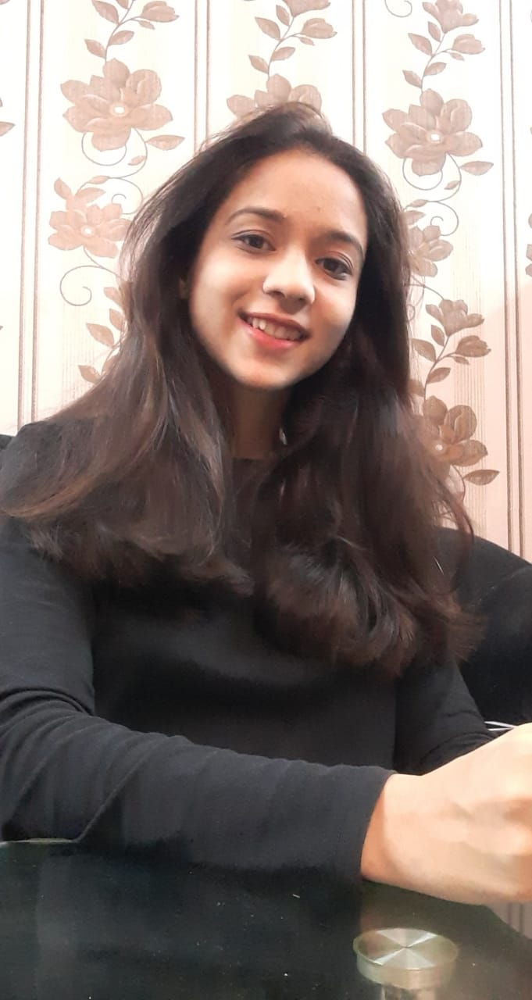

A head for business, a heart for the
world" is what defines the Enactus Community. Enactus, at its core,
forces you to focus on the problems troubling the world and to
find out a sustainable solution for it.
Enactus MLNC has been a major part of who I am today as a human
being. It woke me up to do something for the planet on which my
entire existence is dependent. I became aware of all the ways
we are going wrong and through our projects,
took little steps to right those wrongs. lnteracting with the
community, empowering our benefactors, doing street plays with
deep messages to make people aware of our projects and its goals,
hustling everyday to make the best of our
projects is what constituted my time at Enactus MLNC. Enacts MLNC
has taught me compassion, empathy and considering others before
self. All of these are life lessons which will be with me throughout
my life and I can't thank Enactus
enough for that.
 Aditi Gautam, India
Aditi Gautam, India
Enactus at MLNC, for me, was an absolutely colossal experience in
terms of the sheer highs and lows that we went through as a unit
throughout college life. It was an experience in the simple art of
blending complicated aspects of social entrepreneurship, which then
led me to my inclination towards Corporate Social Responsibility (CSR)
and a general sense of social responsibility, empathy and humility that
is tied to every action I take individually or as a part of a group. It
was also the place where I forged the most trusted friendships and found
the most inspiring people that I know till date; and it's importance
to me can be gauged by the fact that I still closely follow all the
activities at Enactus MLNC and try and do my bit whenever the opportunity
presents itself, despite graduating years ago.
 Chaitanya Modi, India
Chaitanya Modi, India
Have I had to tell one word to summon my experience at enactus,
it would be learning.
Learning which comes from a thousand different avenues, in an extremely
short tenure and makes about a person. It is a majestic view to look back
at how it started and sail my self through it’s days. Tasks which would
generally appear struggle-some to anyone have felt elementary simple here
due to a diligent compliance mechanism and the warm environment that persists
in the society.Enactus has always been very welcoming to who so ever making it after the
fine selection process. All the members are even yet unique. The society
distinguishes the inherent qualities of it’s members and refines them to
an embellished skillset. A glimpse of my days back then would manifest me,
dealing with slum women; working upon our welfare project simultaneously maintaining a touch with
big corporates sponsoring us, leading presentations about our projects in
front of numerous stakeholders on different occasions, learning tech work
from my seniors and imparting the same to my juniors , working on decor
tasks for our periodical fests and most unforgettable, partying with my
team mates which has always been an inevitable activity here.
This prestegious society has developed me holistically and given me the most
glorious days of college. I thereby feel both gloomy and contented to be
called an alumni of this society.

Tanya Arora, India
There is only one word to describe my 2.5 year journey with Enactus -
EXCEPTIONAL
Being in Enactus gives you that personal satisfaction that you are doing
not just for the society but for your own personal development as you
get to experience so many new things, meet different people, get to
understand social problems and the list is endless.
When i started Project Sneh, the research, field visit and having all
the discussions, it was a completely different time of my life.
And the best part was interacting with people and getting to know the
core of Sanitation scenario in Delhi. Many a times, people only talk
about this online and give their opinion but Enactus gives you the
oppertunity of implementing the solution that you think can solve
that problem and that's what we did at Project Sneh after realizing
how big the issue of infant sanitation is, we came up with Reusable
Cloth diaper for that which were eco friendly as well as more hygenic.
All those events, online campaign, Business plan competition ,
brainstorming sessions has completely changed my mindset which I
will cherish for the rest of my life.
 Kunal Arora, India
Kunal Arora, India